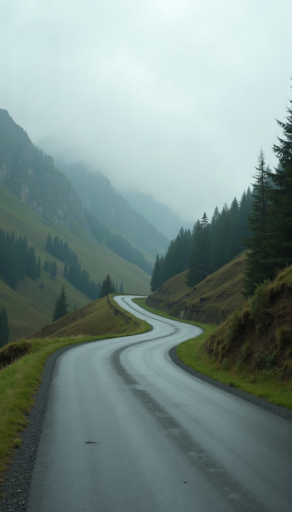

Momentro Guides · Travel films
A calm desktop workflow for a large travel video collection
When a trip leaves you with thousands of clips, the first useful step is not to watch every one. It is to make the project small enough to begin.

A large collection is normal
Travel footage does not arrive as one tidy folder. It comes from a phone, a second phone, an action camera, a small camera, perhaps a drone, then a handful of cards and an old drive. By the time you are home, the amount can feel bigger than the trip itself.
That does not mean you have failed to organise it. It means you travelled with more than one way to remember things.
Do not make the cloud your first task
Moving a large travel library into the cloud, or downloading it again, can take a long time and require more space than you expected. You do not need to wait for that whole process before a film can begin.
Give one project a home on the computer you will use. Keep originals where they already belong, then gather a selected set: the arrival, the landscape that still feels unreal, the meal, the people, the quiet walk back.
Selected does not mean perfect
You are not being asked to decide the fate of every clip. A selected set is simply a working pile for this one film. The duplicate road views, ten almost-identical sunsets, and half-recorded conversations can stay safe in the archive.
Choose the moments you would miss if the trip became only a date on a calendar. That is enough to start.
Start the long pass, then leave the desk
Analysing a larger collection and building a first draft takes real computer time. The duration depends on the number and type of files, and on the resources of the computer running it. It is not meant to be instant.
With Momentro, start the analysis on your desktop and let the computer work through the selected clips while you make dinner, unpack, call a friend, or simply do something else. You are not required to watch a progress bar to prove the project is moving.
The computer can do the repetitive pass. Your attention is most useful later, when the film needs a human choice.
Return for the part only you can decide
When there is a draft, watch it once as if you had not been there. Does it feel like the trip? Is a quiet moment missing? Is there one sequence you would rather hold a little longer?
Make one small change if it helps. Then start the export. The goal is not to finish every file you own; it is to make one travel film you will want to play again.
A practical first run
- Choose one trip, not your whole archive.
- Gather a selected set from the devices you used.
- Start the desktop analysis and step away while it runs.
- Review the first draft with fresh eyes.
- Make a small change if needed, then export.
Let one big trip become a film again.
Momentro helps you turn selected family and travel clips into a draft you can review and export on your computer.